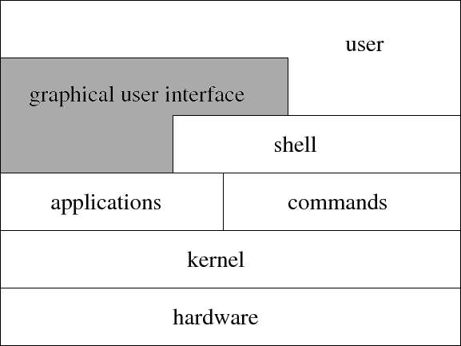
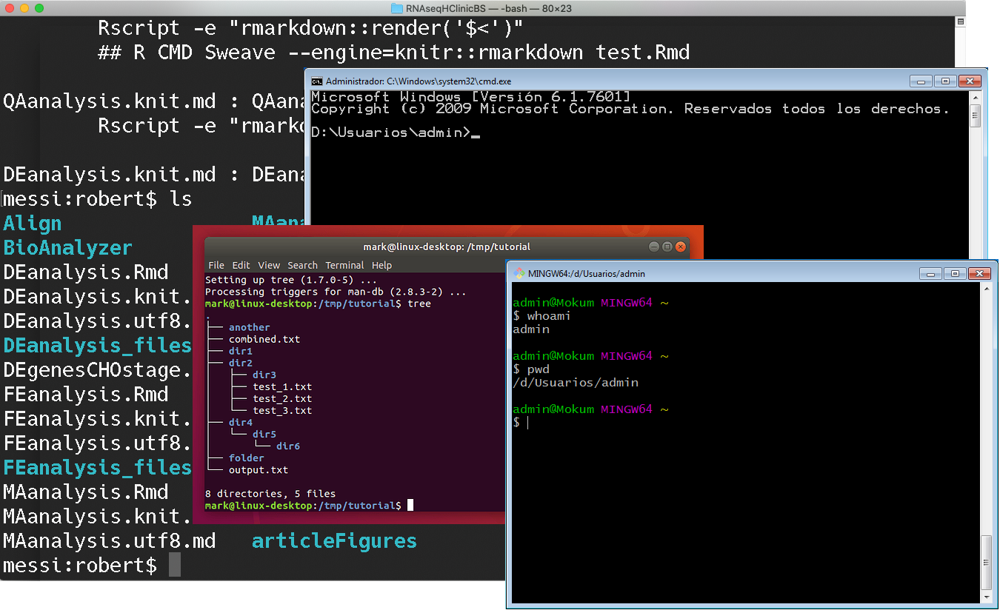
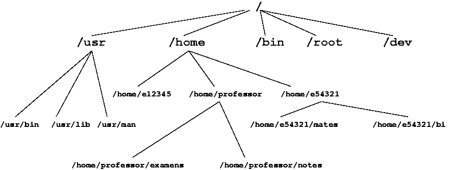

class: title-slide, center, middle # Unix and the command line ## Robert Castelo ### Dept. of Experimental and Health Sciences ### Universitat Pompeu Fabra .footnote[[robert.castelo@upf.edu](mailto:robert.castelo@upf.edu)] ## Fundamentals of Computational Biology ### BSc on Human Biology ### UPF School of Health and Life Sciences ### Academic Year 2020-2021 --- ## The Unix operating system .left-column[ * An _operating system_ (OS) is a software that enables the use and manipulation of the different physical devices forming a computer. * The Unix OS ([Ritchie and Thompson, 1974](https://doi.org/10.1145/361011.361061); [Kernighan and Pike, 1984](https://en.wikipedia.org/wiki/The_Unix_Programming_Environment)) was born on 1969 as a result of a research project at [Bell-Labs](http://www.bell-labs.com/history/unix), USA. ] .right-column[  ] .footer[ Ken Thompson (seated) types as Dennis Ritchie (standing) looks on in 1972, shortly after they and their Bell Labs colleagues invented Unix. Image and caption taken from [The strange birth and long life of Unix. _IEEE Spectrum_, 2011.](https://spectrum.ieee.org/tech-history/cyberspace/the-strange-birth-and-long-life-of-unix) ] --- ## The Unix operating system * The group of engineers that developed Unix already made other attempts to develop an OS in the 60s, such as [Multics](https://en.wikipedia.org/wiki/Multics). * However, only after they developed the [B programming language](https://en.wikipedia.org/wiki/B_%28programming_language%29) they succeeded to develop the first version of Unix, which was written in this language. * The [B programming language](https://en.wikipedia.org/wiki/B_%28programming_language%29) was the precursor of the widely-used [C programming language](https://en.wikipedia.org/wiki/C_%28programming_language%29) ([Kernighan and Ritchie, 1978)](https://en.wikipedia.org/wiki/The_C_Programming_Language). * There are many [variants](https://www.levenez.com/unix) of Unix, one of the most popular ones is [Linux](https://en.wikipedia.org/wiki/Linux) but also [Android](https://en.wikipedia.org/wiki/Android_%28operating_system%29), [iOS](https://en.wikipedia.org/wiki/IOS) and [macOS](https://en.wikipedia.org/wiki/MacOS) are based on a Unix OS. * Did they use the Unix OS 50 years ago in the same way we use it now? --- background-image: url(Computers60s.jpg) background-position: center background-color: white background-size: cover ## The Unix operating system <div class="footer"> <p style="color:white">Big computers, big hair: the women of Bell Labs in the 1960s - in pictures.<br> <a href="https://www.theguardian.com/technology/gallery/2016/feb/13/future-women-the-bell-lab-computer-operators-of-the-1960s-in-pictures-women-in-computing" target="_blank">The Guardian, Sat 13 Feb 2016</a> </p> </div> --- ## The Unix operating system * The Unix OS is organized into **layers**.  * The [_graphical user interface_ (GUI)](https://en.wikipedia.org/wiki/Graphical_user_interface) layer appeared later and the Unix OS was conceived to be used through the shell layer. * The [_shell_](https://en.wikipedia.org/wiki/Unix_shell) layer is a [_command-line user interface_ (CLI)](https://en.wikipedia.org/wiki/Command-line_interface) that allows the user to interact with the computer by writing commands through a [_computer terminal_](https://en.wikipedia.org/wiki/Computer_terminal) or a [_terminal emulator_](https://en.wikipedia.org/wiki/Terminal_emulator). --- ## The computer terminal <img src="DEC_VT100_terminal_transparent.png" width=600> .footer[ A DEC VT100 computer terminal. Image taken from [Wikipedia](https://en.wikipedia.org/wiki/Computer_terminal). ] --- ## The terminal window  --- ## The terminal window * Nowadays, every OS (Windows, macOS or Linux) starts up with a GUI. * The terminal window is just an application with an icon similar to this one: <img src="terminal-app-icon.png" width=40> * In Linux is located next to every other application. * In macOS is located in `Applications -> Utilities`. * In Windows you need to install some Unix emulator such as [Git for Windows](https://gitforwindows.org) (using its Git Bash application). * Other options for Windows in increasing order of complexity are: * Running a Unix system in the [cloud](https://en.wikipedia.org/wiki/Cloud_computing) and access it through the browser. You require a stable internet connection and you normally have to pay for it. * Running a [virtual machine](https://en.wikipedia.org/wiki/Virtual_machine) and installing in it a Linux system. * [Partitioning the hard drive disk](https://en.wikipedia.org/wiki/Disk_partitioning) and install Windows in one of the partitions and Linux in the other one. --- ## The terminal window * At this point, you may ask yourself why do we want to work with a Unix command-line in a terminal window. * The answer is because the command-line allows you to use computing in a modular, efficient and reproducible way: * Modularity: reusing and chaining computations. * Efficiency: automatizing workflows. * Reproducibility: recording computing steps. * In summary, the command-line facilitates the release of your full potential as a computational biologist.. -- --- ## The Unix filesystem * A fundamental component of any OS is the [filesystem](https://en.wikipedia.org/wiki/File_system) that the OS uses to store data. * The filesystem determines the way in which files are organized and the GUIs in currently available OSs provide a graphical interface to this organisation. * We want to learn here how to work with the filesystem through the Unix command-line: * High-level understanding about how the filesystem stores files in the computer. * Learn filesystem commands and the syntax to specify them in the shell. --- ## The Unix filesystem * A graphical representation of the Unix file system is through a [hierarchy](https://en.wikipedia.org/wiki/Filesystem_Hierarchy_Standard), sometimes referred to as a tree.  * We have to main types of files in the filesystem: regular files and directories. * Directories can store regular files and other directories. * On top of the hierarchy we have the [root directory](https://en.wikipedia.org/wiki/Root_directory), which can be likened to the trunk of a tree, as the starting point where all branches originate from. --- ## The Unix filesystem * [Path](https://en.wikipedia.org/wiki/Path_%28computing%29): unique location in the filesystem represented by a sequence of directories, optionally ending with a regular file, separated by the slash character `/`, for instance, `/home/professor/notes` * When we start the shell in a terminal window, we have by default access to a specific working directory in the filesystem: our [home directory](https://en.wikipedia.org/wiki/Home_directory), which can be coded in a path by writing the tilde character (`~`), i.e., `~/notes` * [Current working directory (CWD)](https://en.wikipedia.org/wiki/Working_directory): directory where we have default access, which can be coded in a path by writing a dot (`.`), i.e., `./notes` * **Previous directory**: directory containing the CWD, which can be coded in a path by two consecutive dots (`..`), i.e., `../examens` * **Absolute path**: path starting at the root directory, i.e., `/home/professor/notes` * **Relative path**: path starting at some given CWD, i.e., `./notes`, `../examens`, etc. --- ## Unix commands The syntax of Unix commands is the following: ``` $ command [options] [arguments] ``` where * **$**: is the [command prompt](https://en.wikipedia.org/wiki/Command-line_interface#Command_prompt), which we **should not** write and merely indicates that the rest of the line should be written in the shell. * **command**: is the name of the instruction that we want to execute. For instance, to copy a file we should use the command `cp`. * **options**: one or more words starting with a hyphen (`-`) separated by spaces, i.e., `-r` or `-lha`, that tune the behavior of the command. * **arguments**: one or more words separated by spaces that specify input information that the command needs to perform its task. The (square) brackets `[` and `]` are used above to indicate that not all commands have options and arguments. --- ## Unix file commands Examples of Unix commands that manipulate files: * listing files: ``` $ ls ``` * copying files: ``` $ cp ~/Downloads/data.zip . ``` * removing files: ``` $ rm data.zip ``` * changing CWD: ``` $ cd data ``` --- ## Unix commands to explore file contents Examples of Unix commands that explore the contents of [text files](https://en.wikipedia.org/wiki/Text_file): * beginning of a text file: ``` $ head filename ``` * end of a text file: ``` $ tail filename ``` * whole text file: ``` $ cat filename ``` * paging text files: ``` $ more filename ``` --- ## Redirecting terminal output to a file * Unix offers a mechanism to [redirect](https://en.wikipedia.org/wiki/Redirection_%28computing%29) to a file, the output printed in the terminal window. ``` $ command > file ```  --- ## Concluding remarks * Most Unix filesystems are case-sensitive, a wrong upper-case letter may lead to an error. Syntax must be precise and the [devil is in the detail](https://en.wikipedia.org/wiki/The_devil_is_in_the_detail). * The shell interprets commands by reading words separated by space characters. Using space characters in filenames becomes problematic in the command line. **DO NOT** use spaces or any other non-standard [ASCII](https://en.wikipedia.org/wiki/ASCII) character such as `ñ`, `ç`, accents, etc., in filenames. * Use [snake case](https://en.wikipedia.org/wiki/Snake_case) (e.g., `raw_data.csv`) or [camel case](https://en.wikipedia.org/wiki/Camel_case) (e.g., `rawData.csv`) instead of spaces to specify meaningful filenames. * You do not learn Unix and the command line by only reading through these slides. Only doing the practicals will allow you to actully learn how to do stuff.